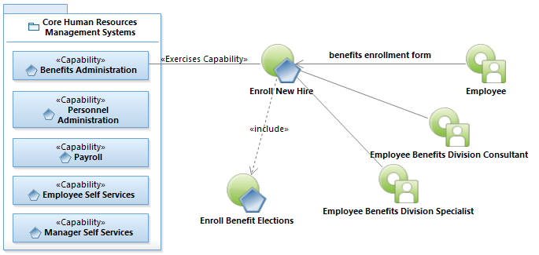
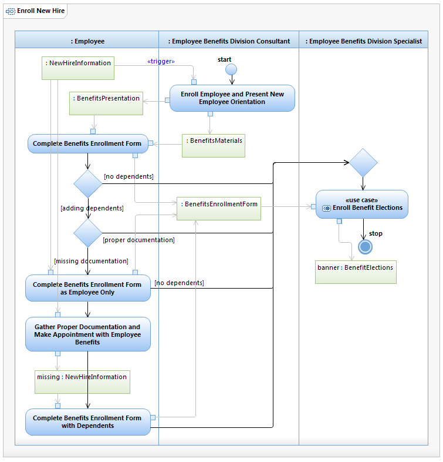

Use Case Model: Add or Drop Dependent Benefits
Architect: Rob Byrd, Chief Enterprise IT Architect
Date Last Modified: 05/15/2012
User Review: Andrea Glasper, Benefits Specialist
Date: TBD
When enrolling a newly hired employee, the employee is instructed to bring certain new hire information to the New Employee Orientation and presented with a benefits presentation and provided supporting benefits materials. If the employee does not have the necessary supporting documentation, they complete the Benefits Enrollment Form without dependents and follow up with the Employee Benefits Division to add dependents after presenting proper documentation. The Benefits Specialist performs Enroll Benefits Elections to enter the employee's benefit elections into the Banner system.
Follow link to Role Definitions

Use Case Model: Enroll New Hire
Follow link to Enroll Benefits Elections

Activity Model: Enroll New Hire